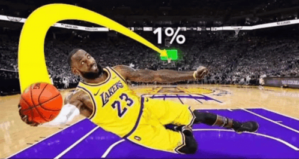

Reuben James Acaac
Developer • Business Minded • Builder
I'm an ICT student in Liceo De Cagayan University and I'm trying to build my own character in my adventurous life where I discover and explore new things. ICT is not all about education, it's about contributing in improving the future.
My interests span web development, cyber security and all technology that involves innovation.
Basic Information
Name: Reuben James Acaac
Age: 19
Birthday: April 10, 2006
Contact: 09623028707
Hobbies
Playing Basketball, Video Games and watching heart crushing movies.
Talents & Skills
- Psychology
- Beatboxing
- Problem Solving & Logical Thinking
- Communication
Interesting Facts
- I sometimes wonder how could I prove that God exists.
- I like gay people because they haven't found the cure yet.